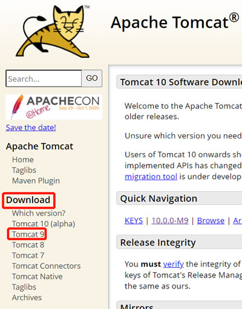
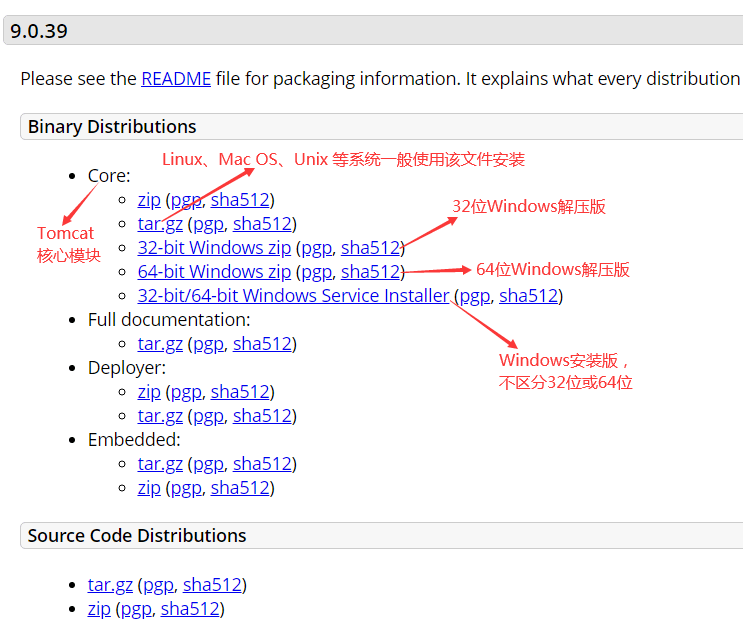
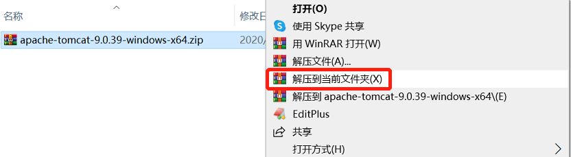

Tomcat下载和安装（图解）
Servlet 是基于 Java 的动态网站开发技术，它的所有类和组件都是基于 Java 实现的，要想使用 Servlet，就必须提前配置好 Java 运行环境。相信各位读者都已经掌握了如何搭建 Java 环境，此处就不再赘述了，不了解的读者请转到：
搭建好了 Java 环境，再安装一款 Web 容器就可以运行 Servlet 代码了。市场上有很多 Web 容器，著名的有 Tomcat、Jetty、JBoss、WebLogic 等，初学者最常使用的是 Tomcat。Tomcat 是 Java 官方推出一款免费开源的 Web 容器，它占用资源少，扩展性好，运行稳定，支持负载均衡，并且易于学习和使用，所以成为最受欢迎的 Tomcat 容器。
本文将为您讲解 Tomcat 的下载和安装。
不同的 Tomcat 版本支持的 Java 版本也不同，读者可以根据自己的 JDK/JRE 版本来选择对应的 Tomcat 版本，如下图所示：
我的本地电脑使用的是 JDK 8，对应的 Tomcat 版本是 10 和 9，但是考虑到 Tomcat 10 还在内测阶段，可能不太稳定，所以我选择了 Tomcat 9。
如图1所示，点击”Tomcat 9”链接即可跳转到 Tomcat 9 下载页面，向下滚动鼠标就能看到具体的下载链接，请读者根据自己的操作系统选择对应的版本，如图2所示。
Windows 下的 Tomcat 有安装版和解压版，下面说一下它们的区别。
安装版 Tomcat 在安装过程中会自动进行相关配置，比如找到 JDK 的位置、读取环境变量 JAVA_HOME 等。安装版 Tomcat 在启动后以服务的方式运行，并且带有 GUI 管理工具（图形界面化的管理工具），用户可以很方便地通过界面进行管理和操作，非常友好。
解压版 Tomcat 还可以到处移动，您可以将它从 A 文件夹移动到 B 文件夹，甚至移动到 U 盘，是真正的绿色版。当您不再使用时，直接删除文件夹即可卸载解压版 Tomcat。
我的电脑是 64 位，下载 64 位 Windows 解压版后得到 apache-tomcat-9.0.39-windows-x64.zip，将其解压缩到计算机某磁盘（最好不要选择 C 盘）即可。
解压缩完成后，打开 Tomcat 所在目录，可以看到它包含了很多子文件夹，它们的作用如下表所示：
搭建好了 Java 环境，再安装一款 Web 容器就可以运行 Servlet 代码了。市场上有很多 Web 容器，著名的有 Tomcat、Jetty、JBoss、WebLogic 等，初学者最常使用的是 Tomcat。Tomcat 是 Java 官方推出一款免费开源的 Web 容器，它占用资源少，扩展性好，运行稳定，支持负载均衡，并且易于学习和使用，所以成为最受欢迎的 Tomcat 容器。
本文将为您讲解 Tomcat 的下载和安装。
Tomcat 下载和安装
进入 Tomcat 官网（http://tomcat.apache.org/），在首页左侧的导航栏中找到“Download”分类，可以看到在它下面有多个版本的 Tomcat，如图1所示。

图1：选择 Tomcat 版本
图1：选择 Tomcat 版本
不同的 Tomcat 版本支持的 Java 版本也不同，读者可以根据自己的 JDK/JRE 版本来选择对应的 Tomcat 版本，如下图所示：
| Tomcat 版本 | 最新子版本 |
Servlet 规范 |
JSP 规范 |
EL 规范 |
WebSocket 规范 |
认证（JASIC） 规范 |
Java 版本 JDK/JRE 版本 |
|---|---|---|---|---|---|---|---|
| 10.0.x（内测） | 10.0.0 | 5.0 | 3.0 | 4.0 | 2.0 | 2.0 | 8 以及更高 |
| 9.0.x | 9.0.36 | 4.0 | 2.3 | 3.0 | 1.1 | 1.1 | 8 以及更高 |
| 8.5.x | 8.5.56 | 3.1 | 2.3 | 3.0 | 1.1 | 1.1 | 7 以及更高 |
| 8.0.x（已被取代） | 8.0.53（已被取代） | 3.1 | 2.3 | 3.0 | 1.1 | N/A | 7 以及更高 |
| 7.0.x | 7.0.104 | 3.0 | 2.2 | 2.2 | 1.1 | N/A |
6 以及更高 （对于 WebSocket，支持 7 以及更高） |
| 6.0.x（已废弃） | 6.0.53（已废弃） | 2.5 | 2.1 | 2.1 | N/A | N/A | 5 以及更高 |
| 5.5.x（已废弃） | 5.5.36（已废弃） | 2.4 | 2.0 | N/A | N/A | N/A | 1.4 以及更高 |
| 4.1.x（已废弃） | 4.1.40（已废弃） | 2.3 | 1.2 | N/A | N/A | N/A | 1.3 以及更高 |
| 3.3.x（已废弃） | 3.3.2（已废弃） | 2.2 | 1.1 | N/A | N/A | N/A | 1.1 以及更高 |
我的本地电脑使用的是 JDK 8，对应的 Tomcat 版本是 10 和 9，但是考虑到 Tomcat 10 还在内测阶段，可能不太稳定，所以我选择了 Tomcat 9。
如图1所示，点击”Tomcat 9”链接即可跳转到 Tomcat 9 下载页面，向下滚动鼠标就能看到具体的下载链接，请读者根据自己的操作系统选择对应的版本，如图2所示。

图2：Tomcat 9 下载页面
图2：Tomcat 9 下载页面
Windows 下的 Tomcat 有安装版和解压版，下面说一下它们的区别。
安装版 Tomcat
安装版 Tomcat 下载后得到一个 exe 安装包，和其它软件的安装流程没有什么区别。安装版 Tomcat 在安装过程中会自动进行相关配置，比如找到 JDK 的位置、读取环境变量 JAVA_HOME 等。安装版 Tomcat 在启动后以服务的方式运行，并且带有 GUI 管理工具（图形界面化的管理工具），用户可以很方便地通过界面进行管理和操作，非常友好。
解压版 Tomcat
解压版 Tomcat 下载后得到一个 zip 压缩包，是免安装的，使用 WinRAR 等软件解压到任意目录后就可以直接使用。解压版 Tomcat 还可以到处移动，您可以将它从 A 文件夹移动到 B 文件夹，甚至移动到 U 盘，是真正的绿色版。当您不再使用时，直接删除文件夹即可卸载解压版 Tomcat。
我的建议
我建议读者使用解压版 Tomcat，除了安装和卸载方便，解压版 Tomcat 还没有 GUI 界面，只能通过使用各种配置文件和命令来操作和管理，这利于初学者学习 Tomcat 的启动和运行流程。这也是大部分 Tomcat 教材的建议。我的电脑是 64 位，下载 64 位 Windows 解压版后得到 apache-tomcat-9.0.39-windows-x64.zip，将其解压缩到计算机某磁盘（最好不要选择 C 盘）即可。

图3：解压 Tomcat
图3：解压 Tomcat
解压缩完成后，打开 Tomcat 所在目录，可以看到它包含了很多子文件夹，它们的作用如下表所示：
| 子目录 | 说明 |
|---|---|
| bin | 命令中心（启动命令，关闭命令……） |
| conf | 配置中心（端口号，内存大小……） |
| lib | Tomcat 的库文件。Tomcat 运行时需要的 jar 包所在的目录。 |
| logs | 存放日志文件。 |
| temp | 存储临时产生的文件，即缓存。 |
| webapps | 存放项目的文件，web 应用放置到此目录下浏览器可以直接访问。 |
| work | 编译以后的 class 文件。 |
关注公众号「站长严长生」，在手机上阅读所有教程，随时随地都能学习。内含一款搜索神器，免费下载全网书籍和视频。

微信扫码关注公众号